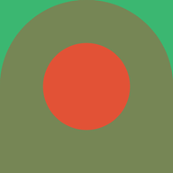
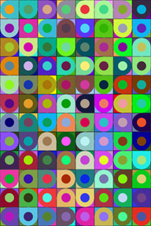

More Fun With For Loops
Create a website that illustrates the use of For Loops, Randomness, and Arrays in drawing on the HTML canvas as outlined below.
Turning it: To turn in this project, you should place the website in a folder called randomloops inside of your class website and link the site from your main class homepage.
Requirements:
The site should contain at least these pages:
- (1 page) A home page with a title and links to the pages listed below. Each page below should include a Spork canvas on which your image is drawn.
- (1 page) Draw a grid of circles so that the radius of each circle is random.
- (1 page) Use your creature function to draw copies of your creature on a grid so that every version of the creature is a random size.
- (1 page) Create a new randomCreature(x,y,r) function that draws a copy of your creature with random colors at (x,y) with radius r. Use this function to draw a grid of random creatures. This may involve these steps:
- Select at least two different regions of your creature that are different colors.
- Rewrite the color declarations for those regions using variables. For example, if my creature has blue eyes, instead of color('blue'); I might use the following steps to get a random eye color:
- At the top of your function, construct an array with possible colors. This might look like var possibleEyeColors=['blue','green','orange'];
- Use the array to select a random color at the top of your function. This might look like var eyeColor=possibleEyeColors.random();
- Now replace color('blue'); when you draw the eyes with color(eyeColor);
- (1 page) Get copies of circle pattern functions from the Fun with For Loops assignments from at least two of your classmates. Use arrays to randomly draw circle patterns at random locations with random sizes.
- (1 page) On this page, you will draw a grid picture with geometric shapes. You should follow these steps:
- Create a function pattern(x,y,r) which draws a geometric pattern at (x,y) with radius r. To do so, you should follow steps like we did for the creature and circle functions. Here is an example: .
- Do at least one of these two things:
- Add a random rotation by a multiple of 90 degrees to your function. To do so, you would add a line such as rotate(floor(random()*4)*90); after the translate command at the top of your pattern function.
- Make at least one of the colors in your pattern random.
- Make a grid drawing using this new random pattern function. Here is an example using the geometric pattern above: 
Here is an example of a geometric drawing on a grid from Sol Lewitt:  Each pattern is a vertical line or a line slanting up or a line slanting down.
Here is an example using a pattern made from arcs of circles:
Each pattern is a vertical line or a line slanting up or a line slanting down.
Here is an example using a pattern made from arcs of circles: